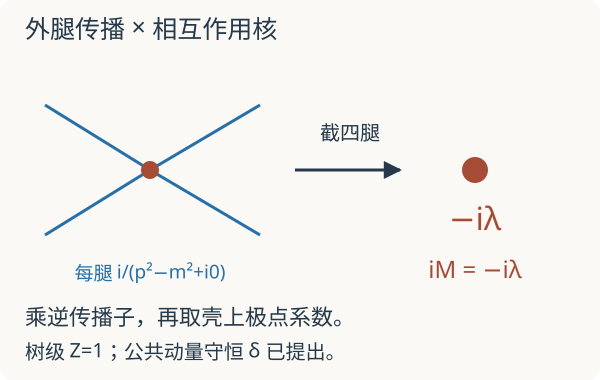

本页目录
场论计算桥 01 · 从关联函数到散射：外腿究竟在算什么
先修：散射与 Born 近似、Feynman 图、路径积分。目标：亲自从标量四点函数中去掉外腿，得到树级散射振幅；解释单粒子极点与场强留数。本讲使用 \(\hbar=c=1\)、度规 \((+,-,-,-)\)。
1. 你算出的四点函数，还不是碰撞概率
时序四点函数 \(G^{(4)}(x_1,\ldots,x_4)=\langle\Omega|T\phi(x_1)\cdots\phi(x_4)|\Omega\rangle\) 描述真空中四次场插入的关联。它包括从插入点传播到相互作用区域的过程。实验中的散射问题却从远处已经准备好的粒子态开始，问碰撞后得到什么出射粒子。
还须先取连通部分 \(G_c^{(4)}\)。自由理论的四点函数不为零，有三种两点函数乘积，但它们代表互不相连的传播，不是四个粒子通过同一次相互作用发生散射。自由场的连通四点函数为零，与没有相互作用散射相符。
我们采用单粒子态归一化
并定义 \(\langle f|S-1|i\rangle=i(2\pi)^4\delta^4(P_f-P_i)\mathcal M\)。这里的 \(\mathcal M\) 才是约化散射振幅。概率或截面还需取模平方、乘相空间、除入射流强，不能把 \(\mathcal M\) 本身叫概率。
2. 粒子为什么表现为一个极点
对能与稳定单粒子态重叠的标量场，设 \(\langle\Omega|\phi(0)|\mathbf p\rangle=\sqrt Z\)。在两次场插入之间插入完整能量本征态，单粒子部分贡献一个能量确定的传播项；Fourier 变换后，对应
\(m_{\rm phys}\) 是极点质量，\(Z\) 是这项极点的留数系数，而不是把整条传播子都乘同一个经验修正。多粒子连续谱还会形成阈值与割线。上式只描述孤立稳定粒子极点附近，不能把不稳定共振当作同样的外部渐近粒子。
LSZ 约化利用这个极点，提取每次场插入与渐近粒子的重叠。【引用】存在合适渐近态等条件时，乘去每条外腿的单粒子极点因子，并作壳上极限，可从连通时序函数得到 S 矩阵。完整证明需要渐近场和波包极限；这里完成其树级计算用法。
3. 一次完整的四条外腿账本
取相互作用 \(\mathcal L_{\rm int}=-\lambda\phi^4/4!\)，树级 \(Z=1,m_{\rm phys}=m\)。Fourier 动量全取流入，则 \(\sum_i p_i=0\)；物理出射动量在这里取负号。一次四场顶点的 \(4!\) 种收缩与拉氏量分母抵消，顶点因子为 \(-i\lambda\)。树级连通函数是
先把公共的动量守恒 delta 提出去。每条外腿乘逆自由传播子 \((p_i^2-m^2+i0)/i\)，四次相消后只剩 \(-i\lambda\)。再取壳上极限 \(p_i^2=m^2\)，与定义里的 \(i\mathcal M\) 对照，得到
不能先把每条传播子代成 \(1/0\) 再相乘，也不能丢掉所有 \(i\) 后凭记忆猜振幅符号。这里的 \(i0\) 是分布边界值处方；截肢可先作为逆传播子的代数相消，物理 LSZ 则用波包与极限严格定义，并非对 delta 函数作普通数值除法。

4. 场强留数不能忘，也不能乘两遍
若 \(Z\ne1\)，采用完整传播子截肢得到的核记为 \(\Gamma_{ \rm amp}\)。极点附近的四点函数等于四条完整外腿乘该核，加上不具全部四个单粒子极点的项。LSZ 对每腿额外保留 \(\sqrt Z\)，因此
等价地，直接在未截肢四点函数上，每腿乘 \((p_i^2-m_{\rm phys}^2)/(i\sqrt Z)\) 并提取极点系数。若选择单位留数的重整化场，则对应的外腿 \(Z\) 因子已吸收进场的定义，不能再重复乘。多种粒子、混合场和自旋场需要各自的留数矩阵或波函数，本讲公式只适用于这里的单种标量。
5. 实验：漏掉一条腿，数值会怎样
先设 \(Z=1\)，暂不考虑公共 delta，把四条外腿的离壳量都形式上设为 \(p_i^2-m^2=\mu_*^2\delta\)，\(\mu_*>0\) 是固定单位。去掉相应单位幂后，截去 \(k\) 条外腿的核的模为
这是检查代数极点阶数的模型，不是一个满足所有散射运动学条件的动量扫描，也没有计算有限 \(i\epsilon\) 的真实过程。先预测 \(k=3\) 与 \(k=4\) 在 \(\delta\to0\) 时的差别。
静态默认：\(\lambda=0.2,\delta=0.1,k=3\)。比较未截肢、当前截肢与全部截肢后的模。
默认结果依次为 2000、2、0.2。把 \(\delta\) 减半，漏一条外腿的结果翻倍；四条全部去掉后保持 0.2。因为剩余外腿数不同，这几种中间核具有不同质量量纲；图中比较的是按同一参考尺度分别无量纲化后的数，不能把它们当作三种截面。
6. 验收与边界
题一。 在 \(-\lambda\phi^4/4!\) 理论中取 \(\lambda=0.3\)。若得到顶点 \(-0.3i\)，\(\mathcal M\)、\(|\mathcal M|^2\) 分别是什么？它们是否已经是总截面？
核对定义
\(\mathcal M=-0.3\)，\(|\mathcal M|^2=0.09\)。都不是总截面；还须给定运动学、相空间积分、流强与相同末态粒子的计数因子。
题二。 四条完整传播子截肢后 \(\Gamma_{\rm amp}=-ig\)，每腿留数 \(Z=1/2\)。物理振幅为何？
核对外态归一化
\(i\mathcal M=Z^2(-ig)=-ig/4\)，所以 \(\mathcal M=-g/4\)。如果原先所谓“截肢核”已经包含 LSZ 外态归一化，则不能再乘这个因子；答题时必须说明核的定义。
无质量长程相互作用、红外发散和约束场需要更仔细的渐近态处理；束缚或禁闭的场变量也不自动对应可观测外部粒子。一个函数有形式分母，不能单凭外形宣布存在可用的粒子 S 矩阵。
速查与后续路线
连通关联函数 → 单粒子极点与留数 → 外腿截肢和归一化 → 壳上振幅 → 相空间与截面。接着读重整化的积分与减法，再返回散射振幅与因子化。
一手教学来源：David Tong：Interacting Fields，包括时序关联、S 矩阵及 LSZ 约化。公式的标量、稳定粒子、树级与归一化约定已在正文分别限定。资料核查：2026-09-08。